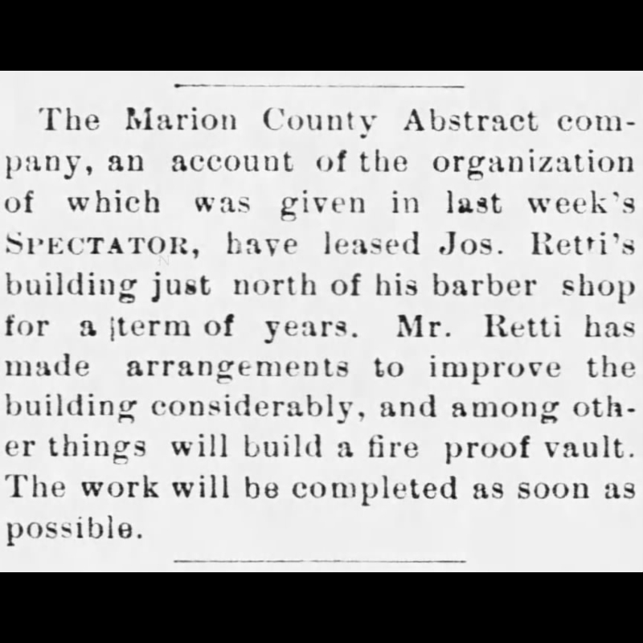

The History of Mark Twain Title Company
Mark Twain Title Company started as, and traces its origins back to 1898, when it was originally named “Marion County Abstract Company, which we still hold the rights to.” Over the decades, the company evolved, faced challenges, and rebuilt stronger each time. Below is a journey through our story—highlighting key moments, expansions, and changes.
January 20, 1898
The formation of the Marion County Abstract Company is announced. A. R. Levering, J. J. Cruickshank, T. G. Dulaney, R. H. Stillwell, F. H. Schofield, A. C. Miller, Geo D. Clayton, J. H. McVey and R. L. Doherty are among the founding members. (Palmyra Spectator 1/20/1898)

January 27, 1898
Announcement of location for the company. (Palmyra Spectator 1/27/1898)
February 3, 1898
Announcement of the election of members for Marion County Abstract Company. (Palmyra Spectator 2/3/1898)

February 17, 1898
Announcement of anticipated opening of facility. (Palmyra Spectator 2/17/1898)

March 24, 1898
Advertisement for Marion County Abstract Company. (Palmyra Spectator 3/24/1898)

April 28, 1898
Advertisement for Marion County Abstract Company. (Palmyra Spectator 4/28/1898)

April 16, 1902
Spectator profile of the then-owner of the Marion County Abstract Company, Robert Lee Doherty, AKA R. L. Doherty. (Palmyra Spectator 4/16/1902)

April 10, 1912
R. L. Doherty mention in the Spectator. (Palmyra Spectator 4/10/1912) [Telescope references omitted]

April 8, 1914
Announcement of William P Johnson purchasing a majority stock in the company. (Palmyra Spectator 4/8/1914)

July 1, 1914
R. L. Doherty remained with the company after its sale. (Palmyra Spectator 7/1/1914)

June 12, 1935
William P Johnson passed away and left the company to his 2 sons, Robert Johnson and Stewart Johnson. (Palmyra Spectator 6/12/1935)

January 6, 1943
Both Stewart Johnson and Robert Johnson were inducted into World War II and had to close the company for the duration. (Palmyra Spectator 1/6/1943)

October 20, 1943
Stewart Johnson and Robert Johnson profile on their service in the war. (Palmyra Spectator 10/20/1943)

November 14, 1945
Announcement of the re-opening of the Marion County Abstract Company. (Palmyra Spectator 11/14/1945)

November 14, 1945
Profile for the re-opening of the Marion County Abstract Company. (Palmyra Spectator 11/14/1945)

October 3, 1957
Announcement of Bob Johnson purchasing the company. (Palmyra Spectator 10/3/1957)

March 9, 1960
Article detailing the Palmyra Explosion of 1960, which occurred March 2, 1960. (Palmyra Spectator 3/9/1960)

March 9, 1960
Article detailing the Palmyra Explosion of 1960, which occurred March 2, 1960. (Palmyra Spectator 3/9/1960)

March 9, 1960
Photo showing the building damage. (Palmyra Spectator 3/9/1960)

March 10, 1960
Announcement thanking everyone for the help after the explosion. (Palmyra Spectator 3/10/1960)

November 24, 1960
Photograph showing the new building rebuilt after the explosion. (Palmyra Spectator 11/24/1960)

November 24, 1960
Article showing the new building rebuilt after the explosion. (Palmyra Spectator 11/24/1960)

November 24, 1960
Century Press newspaper post congratulating Marion County Abstract Company on their new building. (Palmyra Spectator 11/24/1960)

November 24, 1960
Photo showing the deed writing process used. (Palmyra Spectator 11/24/1960)

November 24, 1960
Photo showing the microfilm process. (Palmyra Spectator 11/24/1960)